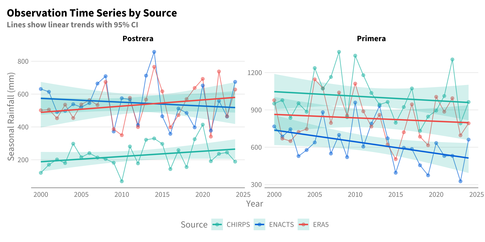
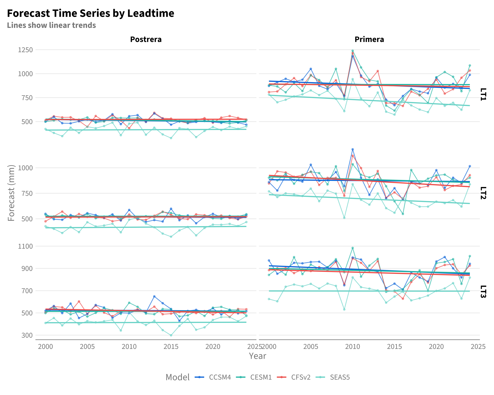
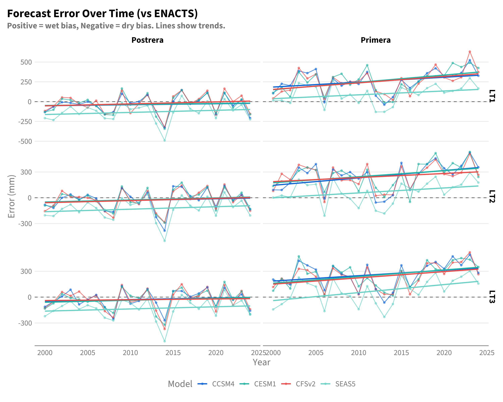
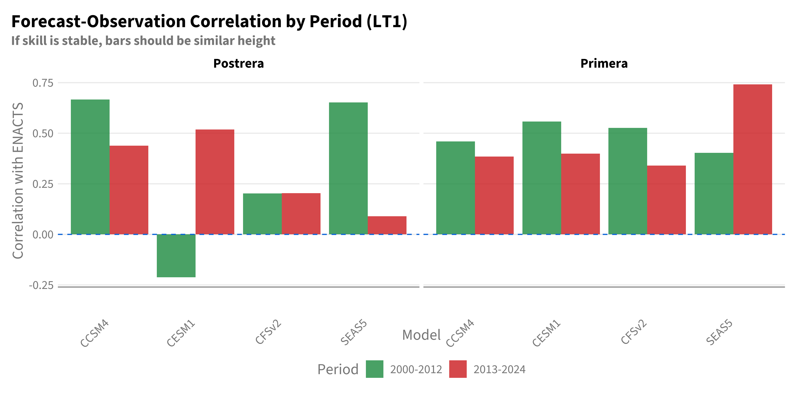

Setup
library(tidyverse)
library(lubridate)
library(cumulus)
library(gghdx)
gghdx()
box::use(../../R/enacts)
box::use(../../R/seas5)
BASELINE_START <- 2000
BASELINE_END <- 2024
PRIMERA_MONTHS <- 5:8
POSTRERA_MONTHS <- 9:11Skill metrics assume the forecast-observation relationship is stationary over time. If either forecasts or observations have systematic trends (drift), skill estimates may be misleading:
This chapter examines temporal trends in both forecasts and observations.
library(tidyverse)
library(lubridate)
library(cumulus)
library(gghdx)
gghdx()
box::use(../../R/enacts)
box::use(../../R/seas5)
BASELINE_START <- 2000
BASELINE_END <- 2024
PRIMERA_MONTHS <- 5:8
POSTRERA_MONTHS <- 9:11# Forecasts
df_insiv <- cumulus::blob_read(
name = "ds-aa-lac-dry-corridor/data/processed/insivumeh_special/insivumeh_special_models_zonal_seasonal_chiquimula.parquet",
container = "projects"
)
df_seas5 <- seas5$load_seas5_seasonal()
# Observations
df_enacts <- enacts$load_enacts_seasonal("chiquimula")
# ERA5
con <- pg_con()
df_era5_raw <- tbl(con, "era5") |>
filter(pcode == "GT20") |>
collect() |>
mutate(
year = year(valid_date),
month = month(valid_date),
mean = mean * days_in_month(valid_date)
)
DBI::dbDisconnect(con)
df_era5 <- bind_rows(
df_era5_raw |> rename(value = mean) |>
filter(month %in% PRIMERA_MONTHS) |>
group_by(year) |>
summarise(obs_mm = sum(value, na.rm = TRUE), .groups = "drop") |>
mutate(window = "primera"),
df_era5_raw |> rename(value = mean) |>
filter(month %in% POSTRERA_MONTHS) |>
group_by(year) |>
summarise(obs_mm = sum(value, na.rm = TRUE), .groups = "drop") |>
mutate(window = "postrera")
)
# CHIRPS
df_chirps_raw <- cumulus::blob_read(
name = "ds-aa-lac-dry-corridor/raw/chirps/2026_cadc_drought_v3_aoi_chirps_monthly_historical.parquet",
container = "projects"
)
df_chirps <- df_chirps_raw |>
filter(ADM1_NAME == "Chiquimula") |>
mutate(year = year(date), month = month(date)) |>
mutate(
window = case_when(
month %in% PRIMERA_MONTHS ~ "primera",
month %in% POSTRERA_MONTHS ~ "postrera",
TRUE ~ NA_character_
)
) |>
filter(!is.na(window)) |>
group_by(year, window) |>
summarise(obs_mm = sum(value, na.rm = TRUE), .groups = "drop")
# Combine
df_obs_all <- bind_rows(
df_enacts |> mutate(source = "ENACTS"),
df_era5 |> mutate(source = "ERA5"),
df_chirps |> mutate(source = "CHIRPS")
) |>
filter(year >= BASELINE_START, year <= BASELINE_END)
df_fcst_all <- bind_rows(df_insiv, df_seas5) |>
filter(year >= BASELINE_START, year <= BASELINE_END) |>
mutate(model = str_remove(forecast_source, "INSIVUMEH_"))Are the three observation sources showing consistent trends, or is one drifting differently?
obs_trends <- df_obs_all |>
group_by(source, window) |>
summarise(
n = n(),
mean_mm = mean(obs_mm),
trend_per_year = coef(lm(obs_mm ~ year))[2],
trend_pvalue = summary(lm(obs_mm ~ year))$coefficients[2, 4],
total_trend = trend_per_year * (BASELINE_END - BASELINE_START),
trend_pct = total_trend / mean_mm * 100,
.groups = "drop"
) |>
mutate(significant = trend_pvalue < 0.1)obs_trends |>
mutate(
trend_summary = sprintf("%.1f mm/yr (%+.0f%% total)%s",
trend_per_year, trend_pct,
ifelse(significant, "*", ""))
) |>
select(source, window, trend_summary) |>
pivot_wider(names_from = window, values_from = trend_summary) |>
knitr::kable(caption = "Observation trends 2000-2024. * = p < 0.1")| source | postrera | primera |
|---|---|---|
| CHIRPS | 3.2 mm/yr (+34% total) | -3.6 mm/yr (-9% total) |
| ENACTS | -2.3 mm/yr (-10% total) | -9.4 mm/yr (-36% total)* |
| ERA5 | 3.8 mm/yr (+17% total) | -2.8 mm/yr (-8% total) |
df_obs_all |>
ggplot(aes(x = year, y = obs_mm, color = source)) +
geom_line(alpha = 0.7) +
geom_point(alpha = 0.5) +
geom_smooth(method = "lm", se = TRUE, alpha = 0.2) +
facet_wrap(~str_to_title(window), scales = "free_y") +
labs(
title = "Observation Time Series by Source",
subtitle = "Lines show linear trends with 95% CI",
x = "Year", y = "Seasonal Rainfall (mm)", color = "Source"
) +
theme(legend.position = "bottom")
Key finding: ENACTS shows a stronger drying trend for Primera (-9.4 mm/yr) than ERA5 or CHIRPS. This could affect skill comparisons if forecasts are compared against different observation sources.
Do forecasts show systematic trends over time?
df_fcst_all |>
filter(leadtime %in% c(1, 2, 3)) |>
ggplot(aes(x = year, y = value, color = model)) +
geom_line(alpha = 0.7) +
geom_point(alpha = 0.5, size = 1) +
geom_smooth(method = "lm", se = FALSE, linewidth = 0.8) +
facet_grid(rows = vars(paste0("LT", leadtime)), cols = vars(str_to_title(window)), scales = "free_y") +
labs(
title = "Forecast Time Series by Leadtime",
subtitle = "Lines show linear trends",
x = "Year", y = "Forecast (mm)", color = "Model"
) +
theme(legend.position = "bottom")
fcst_trends <- df_fcst_all |>
filter(leadtime %in% c(1, 2, 3)) |>
group_by(model, window, leadtime) |>
summarise(
trend_per_year = coef(lm(value ~ year))[2],
trend_pvalue = summary(lm(value ~ year))$coefficients[2, 4],
.groups = "drop"
) |>
mutate(
significant = trend_pvalue < 0.1,
trend_fmt = sprintf("%.1f%s", trend_per_year, ifelse(significant, "*", ""))
)
fcst_trends |>
select(model, window, leadtime, trend_fmt) |>
pivot_wider(names_from = leadtime, values_from = trend_fmt, names_prefix = "LT") |>
arrange(window, model) |>
knitr::kable(caption = "Forecast trends (mm/year). * = p < 0.1")| model | window | LT1 | LT2 | LT3 |
|---|---|---|---|---|
| CCSM4 | postrera | -1.1 | -0.4 | -0.5 |
| CESM1 | postrera | -1.1* | 0.0 | 0.0 |
| CFSv2 | postrera | 0.2 | 0.2 | -1.4 |
| SEAS5 | postrera | 0.3 | 0.6 | 0.2 |
| CCSM4 | primera | -3.2 | -0.8 | -3.1 |
| CESM1 | primera | -0.1 | -2.3 | -1.7 |
| CFSv2 | primera | -1.2 | -4.6* | -2.1 |
| SEAS5 | primera | -4.5* | -3.6 | -0.1 |
More important than individual trends is whether the forecast-observation relationship is changing.
df_error <- df_fcst_all |>
filter(leadtime %in% c(1, 2, 3)) |>
left_join(df_enacts |> select(year, window, obs_mm), by = c("year", "window")) |>
mutate(error = value - obs_mm)
df_error |>
ggplot(aes(x = year, y = error, color = model)) +
geom_hline(yintercept = 0, linetype = "dashed", color = "grey50") +
geom_line(alpha = 0.7) +
geom_point(alpha = 0.5, size = 1) +
geom_smooth(method = "lm", se = FALSE, linewidth = 0.8) +
facet_grid(rows = vars(paste0("LT", leadtime)), cols = vars(str_to_title(window)), scales = "free_y") +
labs(
title = "Forecast Error Over Time (vs ENACTS)",
subtitle = "Positive = wet bias, Negative = dry bias. Lines show trends.",
x = "Year", y = "Error (mm)", color = "Model"
) +
theme(legend.position = "bottom")
error_trends <- df_error |>
group_by(model, window, leadtime) |>
summarise(
trend_per_year = coef(lm(error ~ year))[2],
trend_pvalue = summary(lm(error ~ year))$coefficients[2, 4],
total_drift = trend_per_year * (BASELINE_END - BASELINE_START),
.groups = "drop"
) |>
mutate(
significant = trend_pvalue < 0.1,
drift_fmt = sprintf("%.1f (%+.0f mm total)%s",
trend_per_year, total_drift,
ifelse(significant, "*", ""))
)
error_trends |>
filter(leadtime == 1) |>
select(model, window, drift_fmt) |>
pivot_wider(names_from = window, values_from = drift_fmt) |>
knitr::kable(caption = "Error drift at LT1 (mm/year). * = p < 0.1")| model | postrera | primera |
|---|---|---|
| CCSM4 | 1.3 (+30 mm total) | 6.2 (+148 mm total) |
| CESM1 | 1.3 (+30 mm total) | 9.2 (+222 mm total)* |
| CFSv2 | 2.5 (+60 mm total) | 8.2 (+197 mm total)* |
| SEAS5 | 2.7 (+64 mm total) | 4.9 (+116 mm total) |
Another way to assess stationarity: does skill differ between the first and second half of the record?
df_split <- df_fcst_all |>
filter(leadtime == 1) |>
left_join(df_enacts |> select(year, window, obs_mm), by = c("year", "window")) |>
mutate(period = ifelse(year <= 2012, "2000-2012", "2013-2024"))
split_corr <- df_split |>
group_by(model, window, period) |>
summarise(cor = cor(value, obs_mm, use = "complete.obs"), .groups = "drop")
split_corr |>
ggplot(aes(x = model, y = cor, fill = period)) +
geom_col(position = "dodge", alpha = 0.8) +
geom_hline(yintercept = 0, linetype = "dashed") +
facet_wrap(~str_to_title(window)) +
scale_fill_manual(values = c("2000-2012" = "#1A9850", "2013-2024" = "#D73027")) +
labs(
title = "Forecast-Observation Correlation by Period (LT1)",
subtitle = "If skill is stable, bars should be similar height",
x = "Model", y = "Correlation with ENACTS", fill = "Period"
) +
theme(legend.position = "bottom", axis.text.x = element_text(angle = 45, hjust = 1))
split_corr |>
pivot_wider(names_from = period, values_from = cor) |>
mutate(change = `2013-2024` - `2000-2012`) |>
select(model, window, `2000-2012`, `2013-2024`, change) |>
mutate(across(where(is.numeric), ~sprintf("%.2f", .x))) |>
pivot_wider(names_from = window, values_from = c(`2000-2012`, `2013-2024`, change)) |>
knitr::kable(caption = "Split-half correlations and change")| model | 2000-2012_postrera | 2000-2012_primera | 2013-2024_postrera | 2013-2024_primera | change_postrera | change_primera |
|---|---|---|---|---|---|---|
| CCSM4 | 0.67 | 0.46 | 0.44 | 0.38 | -0.23 | -0.08 |
| CESM1 | -0.21 | 0.56 | 0.52 | 0.40 | 0.73 | -0.16 |
| CFSv2 | 0.20 | 0.53 | 0.20 | 0.34 | 0.00 | -0.19 |
| SEAS5 | 0.65 | 0.40 | 0.09 | 0.74 | -0.56 | 0.34 |
Temporal drift in climate data products is a known issue across many sources and regions - satellite algorithms evolve, station networks change, and reanalysis systems are updated. We observe drift here as well:
No. The drift magnitudes are modest relative to interannual variability, and drift affects both seasons similarly. The split-half instability for Postrera is concerning, but this is more likely a symptom of limited sample size than evidence that drift is causing poor skill.
Bottom line: Drift is present but does not explain the contradictory Postrera patterns from Chapter 3. The investigation continues in the next chapter with internal consistency diagnostics.